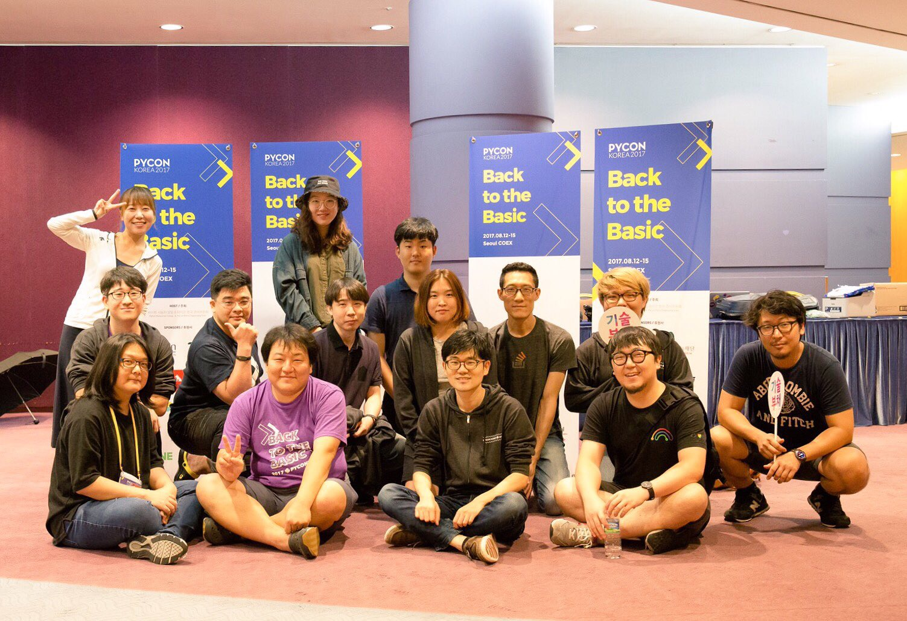

하고 있는 일에 지나치게 몰입하여 주변을 살피지 못하게 되면, 보다 의미있는 결과를 내기가 어렵다. 요즘 아무도 사용할 것 같지 않은 기능들을 만드는데 시간을 낭비하고 있다.
- 마크다운 목록 정렬하기
- 한글 처리를 위한 Django template filter/tag 만들기
- 위지윅 에디터 만들기
mdls - Markdown List Sorter
먼저, 마크다운 ...
read more구글 브레인 프로젝트를 이끌고 있는 제프 딘이 얼마 전에 발표한 바에 따르면 구글의 기존 언어 번역 코드는 50만줄 가량이었는데, 텐서플로우로 작성된 대규모 머신 러닝 모델에 기반한 번역 코드는 500줄 수준으로 줄어들었다고 한다.
참고: Google shrinks language translation code from 500,000 to 500 lines
머신 러닝에 ...
read more
준비위원회 분들과 거의 반년을 준비해서 4일간 코엑스 그랜드볼룸에서 진행했던 파이콘 한국 2017이 어제 스프린트 진행을 마지막으로 끝났다.
많은 사람이 운동을 배울 때 자주 듣는 얘기는 몸에 힘을 빼라는 것이다. 몸에 힘을 빼야 물에 뜰 수 있는 것처럼. 어쩌면 거창한 목표나 불필요한 공명심 없이 시작했기 때문에 지금까지 이런저런 일이 ...
read morePage 1 / 4 »